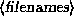

Next: 3.10 Managing file links
Up: 3.9 File Permissions
Previous: 3.9.3 Dependencies
The command chmod is used to set the permissions on a file. Only
the owner of a file may change the permissions on that file.
The syntax of chmod is:
chmod {a,u,g,o}{+,-}{r,w,x} 
Briefly, you supply one or more of
all, user, group, or other. Then you specify
whether you are adding rights (+) or taking them away (-).
Finally, you specify one or more of
read, write, and execute. Some examples of legal
commands are:
- chmod a+r stuff
-
Gives all users read access to the file.
- chmod +r stuff
-
Same as above---if none of a, u, g, or o is
specified, a is assumed.
- chmod og-x stuff
-
Remove execute permission from users other than the owner.
- chmod u+rwx stuff
-
Allow the owner of the file to read, write, and execute the file.
- chmod o-rwx stuff
-
Remove read, write, and execute permission from users other than the
owner and users in the file's group.
Next: 3.10 Managing file links
Up: 3.9 File Permissions
Previous: 3.9.3 Dependencies
Matt Welsh
mdw@sunsite.unc.edu